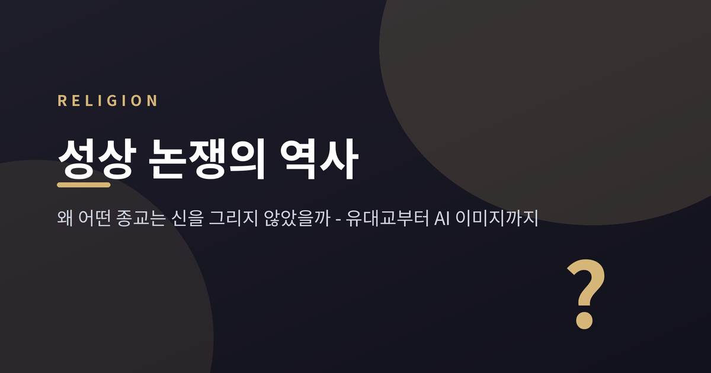
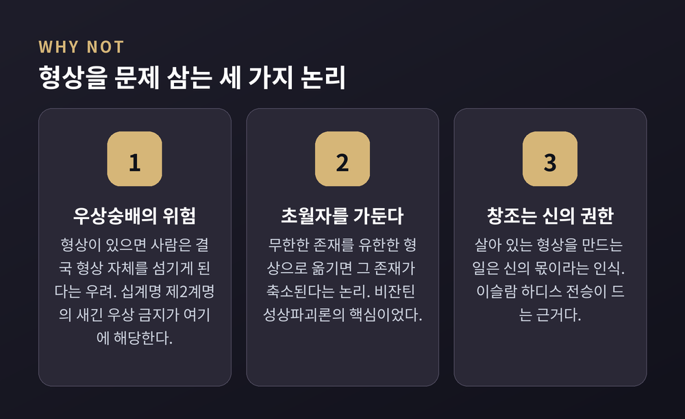
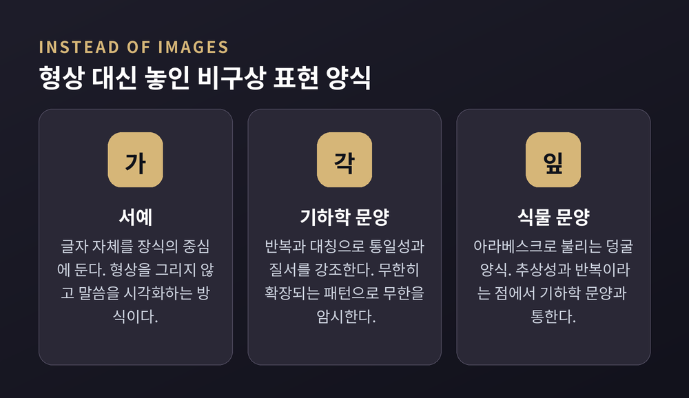
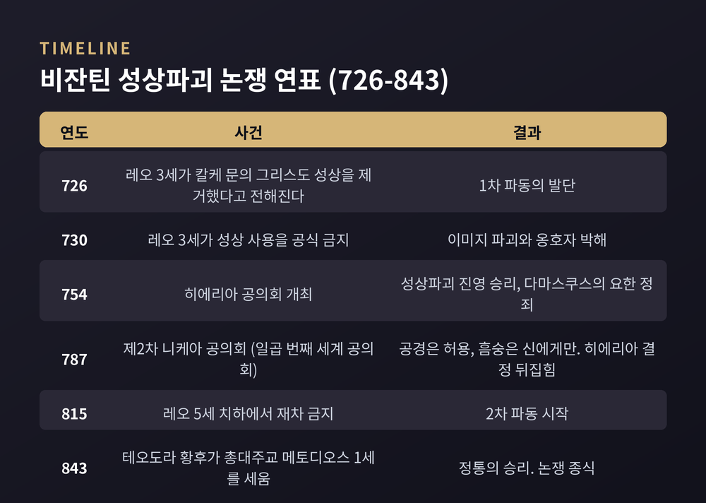
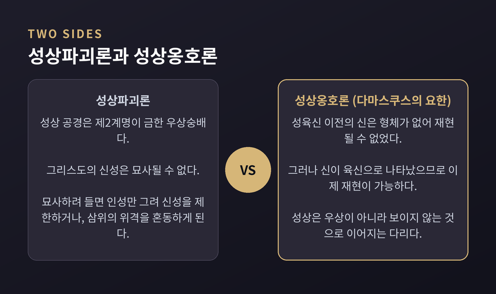
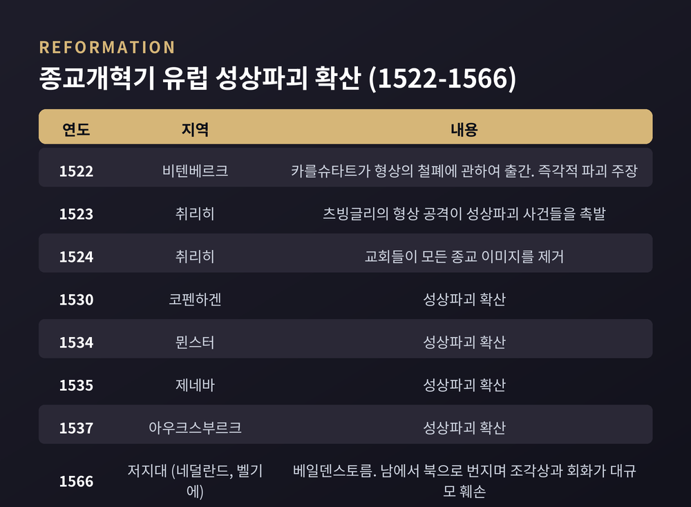
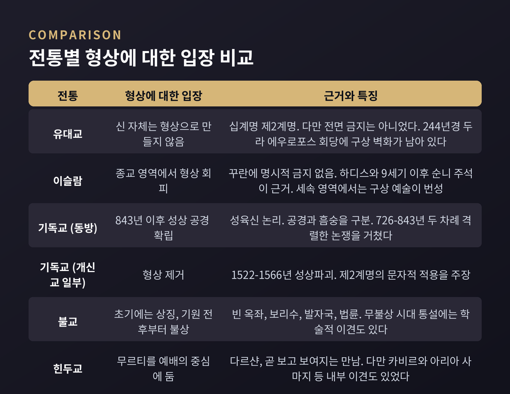

이번 글에서는 세계 종교의 성상 논쟁을 정리해 보겠습니다. 어떤 전통은 신을 그리지 않았고, 어떤 전통은 형상을 예배의 중심에 두었습니다. 같은 질문 앞에서 답이 갈린 이유를 비교종교의 시선으로 따라가 봅니다.
먼저 세 줄로 요약하겠습니다. 형상 금지의 핵심 논리는 우상숭배 우려와 "초월자를 형상에 가둔다"는 문제의식입니다. 비잔틴 제국은 726년부터 843년까지 두 차례에 걸쳐 이 문제로 갈라섰고, 843년 성상 옹호로 결론지었습니다. 그리고 어느 전통도 처음부터 끝까지 한 입장을 고수하지는 않았습니다.
자료를 훑어보면 반대 논거는 크게 세 갈래로 모입니다.
첫째, 우상숭배의 위험입니다. 형상이 있으면 사람은 결국 형상 자체를 섬기게 된다는 우려입니다. 유대교 무형상주의의 뿌리인 십계명 제2계명, 곧 출애굽기 20장 4절의 '새긴 우상' 금지가 여기에 해당합니다.
둘째, 초월자를 유한한 형상에 가둔다는 문제입니다. 무한한 존재를 손바닥만 한 판에 옮기면 그 존재가 축소된다는 논리입니다. 비잔틴 성상파괴론의 핵심이 바로 이것이었습니다.
셋째, 창조는 신의 고유 권한이라는 논리입니다. 이슬람의 형상 회피는 우상숭배 금지와 함께 "살아 있는 형상을 만드는 일은 신의 몫"이라는 인식에서 나옵니다.
한 가지 짚어둘 것이 있습니다. 형상을 만들지 않는 태도(아니코니즘)와 만들어진 형상을 부수는 행위(이코노클라즘)는 다른 개념입니다. 이 둘을 섞으면 논의가 흐려집니다.

유대교의 무형상주의는 제2계명에 근거합니다. 신이나 신적 존재의 시각적 재현을 만들거나 숭배하지 말라는 조항입니다.
다만 여기서 흔한 오해를 하나 걷어내야 합니다. 현재 학계의 정리에 따르면, 성서 시대와 헬레니즘·로마 시대에 형상 재현의 총체적 금지가 있었다는 관념은 유지되기 어렵습니다. 유대인들은 역사 내내 회당 장식, 장묘 기념물, 채색 필사본, 자수를 만들어 왔습니다.
시대와 지역에 따라 온도차도 컸습니다. 1세기 유대 지역의 랍비들은 인간 형상 묘사와 신전 내 조각상에 격렬히 반대했습니다. 그러나 3세기 바빌로니아의 유대인들은 다른 견해를 가졌습니다.
가장 인상적인 물증은 시리아의 두라 에우로포스 회당입니다. 244년경 완공된 세계 최고(最古)급 회당인데요. 벽면에 히브리 성서의 서사를 묘사한 광범위한 구상 회화가 남아 있습니다. 더 흥미로운 점은 이 벽화들이 랍비들의 반대 없이 제작된 것으로 보인다는 사실입니다.
정리하면 이렇습니다. 유대교의 핵심은 "신 자체를 형상으로 만들지 않는다"였지, "모든 그림을 금한다"가 아니었다는 편이 사실에 가깝습니다.
이 대목이 종교학에서 가장 자주 언급되는 논점입니다.
꾸란에는 시각적 이미지에 대한 명시적 금지 조항이 없습니다. 오히려 꾸란은 신의 별칭으로 '무사위르(musawwir)'라는 단어를 씁니다. '형상을 빚는 이'라는 뜻입니다.
그렇다면 금지의 근거는 어디에 있을까요. 주로 하디스, 곧 예언자 전승입니다. 사히흐 알부하리와 사히흐 무슬림 같은 전승 모음집은 살아 있는 형태의 조각상과 그림 제작을 강하게 비난합니다. 형상 제작자는 자기 피조물에 생명을 불어넣을 수 없기 때문이라는 논리입니다. 그것은 신의 특권이니까요.
여기에 해석의 누적이 더해집니다. 9세기 이후 순니 타프시르(꾸란 주석) 학자들은 이 전승에서 살아 있는 존재의 재현 일체에 대한 범주적 금지를 점점 더 강하게 읽어냈습니다. 무슬림들은 시대와 장소에 따라 이 금지를 서로 다르게 해석해 왔습니다.
무함마드 묘사만 봐도 그렇습니다. 페르시아와 오스만의 세밀화에는 무함마드를 그린 그림이 실재합니다. 1539년에서 1543년 무렵부터 사파비 왕조에서는 얼굴을 베일로 가리는 방식이 관례가 되었습니다. 불경해서가 아니라 경외의 표현으로 이해되었습니다. 13세기에서 15세기에는 전신과 얼굴을 모두 보여주는 사실적 묘사도 있었고, 16세기 이후로 오면서 불꽃이나 광배 같은 추상적 표현으로 옮겨갔습니다.
순니와 시아의 결도 다릅니다. 순니 법학은 관련 하디스에 대한 문자적 준수를 강조합니다. 시아 전통은 같은 하디스를 인정하면서도 덜 엄격하게 해석해, 페르시아·오스만 맥락의 역사적 구상 예술을 허용해 왔습니다. 어느 쪽이 옳은지는 이 글이 판단할 일이 아닙니다. 다만 하나의 이슬람이 아니라 여러 해석이 있었다는 사실은 분명합니다.
형상을 비운 자리는 그냥 비어 있지 않았습니다. 다른 것으로 채워졌습니다.
메트로폴리탄 미술관은 이슬람 장식의 기본 구성 요소를 넷으로 정리합니다. 서예, 식물 문양, 기하학 문양, 그리고 구상 표현입니다. 이 중 앞의 셋이 비구상 장식 3종입니다.
기하학 문양이 특히 흥미롭습니다. 이슬람 예술가들은 고전 전통에서 요소를 가져와 복잡하게 발전시켰고, 통일성과 질서를 강조하는 새로운 장식을 만들어냈습니다. 반복과 복잡성 속에서 무한한 확장의 가능성을 제시하는 방식입니다. 형상으로 신을 한 자리에 붙들어 매는 대신, 끝없이 이어지는 패턴으로 무한을 암시한 셈입니다.
한 가지 더 짚을 것이 있습니다. 자주 인용되는 "이슬람의 형상 묘사 반대"는 종교 예술과 종교 건축에는 대체로 들어맞습니다. 그러나 세속 영역에서는 거의 모든 이슬람 문화권에서 구상 표현이 번성했습니다. 궁정 회화와 삽화본이 그 증거입니다.

가장 격렬했던 무대는 비잔틴 제국이었습니다.
발단은 726년입니다. 황제 레오 3세가 콘스탄티노플 황궁 칼케 문의 그리스도 성상을 제거했다고 전해집니다. 730년에는 성상 사용을 공식적으로 금지했습니다. 그는 성상이 신성모독이라고 보았습니다. 이후 광범위한 이미지 파괴와 옹호자 박해가 뒤따랐습니다.
반대도 만만치 않았습니다. 특히 수도원 진영과 교황 그레고리우스 2세·3세가 강하게 맞섰습니다.
754년 히에리아 공의회는 성상파괴 진영의 손을 들어줍니다. 이 공의회에서 다마스쿠스의 요한이 정죄되었습니다.
반전은 787년입니다. 이레네 황후의 지원 아래 총대주교 타라시오스가 제2차 니케아 공의회를 소집합니다. 기독교의 일곱 번째 세계 공의회였고, 교황 아드리아누스 1세의 대표단이 참석해 결정을 승인했습니다. 히에리아의 결정은 뒤집혔습니다.
이때의 결론이 중요합니다. 공의회는 성상이 공경(veneration)을 받을 자격은 있으나 흠숭(adoration)의 대상은 아니며, 흠숭은 오직 신에게만 돌려진다고 정리했습니다. '성상 숭배 허용'이 아니라 '공경과 흠숭의 구분'이 공식 논리였던 것입니다.
그러나 끝이 아니었습니다. 815년 레오 5세 치하에서 다시 뒤집힙니다. 2차 파동입니다.
최종 결말은 843년입니다. 테오도라 황후와 테옥티스토스가 성상 옹호파 총대주교 메토디오스 1세를 세우고 종교 이미지를 다시 승인합니다. 콘스탄티노플 시내에서 개선 행렬이 이어졌고, 하기아 소피아의 성찬 예배로 마무리되었습니다. 이 사건이 '정통의 승리(Triumph of Orthodoxy)'입니다. 오늘날에도 동방정교회가 기념합니다.

양측의 논리를 나란히 놓아보겠습니다.
성상파괴 측은 이렇게 말했습니다. 성상 공경은 제2계명이 금한 우상숭배다. 게다가 그리스도의 신성은 묘사될 수 없다. 묘사하려 들면 인성만 그려 신성을 제한하거나, 삼위의 위격을 혼동하게 된다.
성상 옹호 측의 대표는 다마스쿠스의 요한입니다. 흥미롭게도 그는 무슬림 지배 하의 팔레스타인에서 글을 썼습니다. 730년경의 저작 『신적 형상에 관한 세 편의 논고』에서 그는 성상을 신적인 것으로 이어지는 다리로 옹호했습니다. 성상이 보이지 않는 것을 만질 수 있게 만든다는 것입니다.
그의 핵심은 성육신 논증이었습니다. 성육신 이전의 신은 형체도 몸도 없었기에 재현될 수 없었다. 그러나 신이 육신으로 나타나 사람들 사이에 살았으므로, 이제는 재현이 가능하다.
그가 남긴 문장은 이렇습니다. "나는 물질을 숭배하지 않는다. 나는 물질의 하나님을 숭배한다."
어느 쪽이 신학적으로 옳은지는 이 글의 몫이 아닙니다. 다만 논쟁의 구조는 분명합니다. 신이 보이게 된 적이 있느냐 없느냐 — 이 하나가 답을 갈랐습니다.
한 가지 더 덧붙이면, 이 논쟁은 순수한 신학 논쟁만도 아니었습니다. 동시에 황제와 교회 사이의 권력 투쟁이었고, 그 여파로 동서 기독교의 분열이 영구히 깊어졌습니다.

726년의 질문은 사라지지 않았습니다. 800년 가까이 지나 유럽에서 되살아납니다.
1522년, 안드레아스 카를슈타트가 『형상의 철폐에 관하여』를 출간합니다. 우상숭배적 형상의 즉각적 파괴를 주장했고, 비텐베르크의 소요를 키웠습니다.
취리히에서는 츠빙글리가 형상을 공격했습니다. 그 발언이 도시와 관할 마을에서 성상파괴 사건들을 촉발했습니다. 정작 츠빙글리 본인은 그런 소요를 승인할 뜻이 없었습니다. 1524년 취리히의 교회들은 모든 종교 이미지를 제거했습니다.
불길은 번졌습니다. 취리히(1523), 코펜하겐(1530), 뮌스터(1534), 제네바(1535), 아우크스부르크(1537)로 이어집니다.
정점은 1566년 여름의 베일덴스토름입니다. 네덜란드어로 '형상의 폭풍'이라는 뜻입니다. 저지대에서 남에서 북으로 급속히 번지며 수많은 조각상과 회화와 건물이 훼손되었습니다.

동아시아와 남아시아로 눈을 돌리면 그림이 또 달라집니다.
불교 예술의 가장 이른 국면은 흔히 '무불상 시대'로 서술됩니다. 붓다의 반열반 이후 대략 기원전 3세기부터 기원후 1세기까지, 바르후트·산치·보드가야·아마라바티의 장인들은 붓다의 인간 형상을 보여주지 않았습니다. 대신 상징을 놓았습니다. 빈 옥좌, 보리수, 붓다의 발자국, 법륜, 그리고 산치의 기수 없는 말입니다. 돌 옥좌가 있고 발받침이 있고 뒤에 나무가 있는데, 앉은 이만 없습니다.
불상이 등장한 것은 기원 전후입니다. 쿠샨 왕조의 후원을 받은 간다라와 인도 중북부의 마투라, 두 유파가 독립적이면서도 거의 동시에 온전한 붓다 상을 조각하기 시작합니다. 붓다의 현현한 형상을 강조하는 대승 교리의 전개가 배경이었습니다.
다만 이 통설에는 만만치 않은 반론이 있습니다. 1990년 수전 헌팅턴이 불교 아니코니즘 개념에 도전했고, 그 논쟁은 지금도 이어집니다. 그는 아니코닉이라 불려온 장면들 상당수가 붓다의 생애가 아니라 사리 숭배나 순례 재연을 그린 것이라고 보았습니다. 학자들이 선입견에 이끌려 "붓다 없이 붓다를 그리려 한 예술가"를 상상했다는 지적입니다. 비디아 데헤지아 등이 이를 반박했습니다. 양측이 함께 인정하는 지점은 하나입니다. 크고 독립적인 붓다 상이 가장 이른 시기에는 발견되지 않는다는 사실입니다.
힌두교는 정반대 방향으로 갔습니다. 무르티는 신을 나타내는 신성한 형상이고, 예배의 목적은 다르샨입니다. 보고, 또 신에게 보여지는 것입니다. 무르티는 프라나 프라티슈타라는 봉헌 의례를 거쳐 생기를 받고, 이후 장식과 푸자로 예배됩니다. 여기서 형상은 신을 가두는 것이 아니라 신을 만나는 통로입니다.
그렇다고 힌두교 내부가 한목소리였던 것은 아닙니다. 무르티 예배는 여러 방식 중 하나였고 전통 내부에서 자주 논쟁의 대상이었습니다. 박티 운동의 카비르(1440~1518)는 형상 예배를 강하게 거부했습니다. 식민지 시기에는 브라흐모 사마지를 세운 람 모한 로이, 1875년 아리아 사마지를 세운 다야난다 사라스와티 같은 개혁가들이 무르티 예배를 거부했습니다.

이제 처음의 물음으로 돌아가겠습니다. 왜 답이 갈렸을까요. 자료를 놓고 보면 몇 개의 변수가 보입니다.
신 개념이 다릅니다. 초월하고 형상 없는 신을 상정하는 체계와, 현현이나 화신을 인정하는 체계는 출발점부터 다릅니다. 성육신 논리의 유무가 비잔틴 논쟁의 분기점이었습니다.
경전 근거의 성격도 다릅니다. 유대교에는 제2계명이라는 명문이 있습니다. 이슬람에는 꾸란의 명문이 없고 하디스와 후대 해석이 있습니다. 같은 '금지'라도 무게가 다르게 실립니다.
영역 구분도 변수입니다. 이슬람은 종교 예술과 세속 예술을 나누어, 후자에서 구상 예술을 꽃피웠습니다.
권력도 빼놓을 수 없습니다. 비잔틴 논쟁은 교리만으로 설명되지 않습니다. 황제와 교회의 힘겨루기가 겹쳐 있었습니다.
외부와의 접촉도 작동합니다. 힌두 개혁 운동의 무르티 거부는 식민지 상황과 기독교의 시선이라는 맥락에서 나왔습니다.
그리고 무엇보다, 해석은 시간에 따라 움직였습니다. 유대교는 1세기와 3세기가 달랐습니다. 이슬람은 9세기 이후 해석이 강화되었습니다. 불교는 무불상에서 불상으로 갔습니다. 무함마드 묘사는 사실적 표현에서 추상적 표현으로 옮겨갔습니다. 어느 전통도 처음부터 끝까지 한 입장을 고수하지 않았습니다.
예전엔 성상 논쟁이 나무판과 회벽과 돌 위에서 벌어졌습니다. 지금은 화면 위에서 벌어집니다.
AI가 생성한 예수 이미지가 소셜 미디어에 넘쳐납니다. Pray.com이 만든 AI 생성 성서 영상 가운데 요한계시록 콘텐츠는 두 달 만에 75만 회 이상 조회를 기록했습니다. 전문가들은 예수를 묘사하는 AI 모델이 종교 전통을 균질화할 수 있다고 경고합니다. 특히 취약한 이용자가 위안을 구할 때 신앙 자체를 형성해 갈 수 있다는 우려입니다.
학계도 반응하고 있습니다. AI 생성 종교 이미지의 신학적 지위를 비잔틴 성상 이론으로 검토하는 연구가 나왔습니다. DALL·E와 Midjourney 같은 모델을 고대 후기와 비잔틴의 재현·유사성·매개 논쟁과 마주 앉히는 시도입니다. AI 생성 초상은 신학적으로도 미술사적으로도 성상이라 부를 수 없다는 주장이 제기되었습니다.
논란도 이미 벌어졌습니다. 2026년 4월 12일, 트럼프 대통령이 자신을 예수 그리스도로 묘사한 AI 생성 이미지를 게시했습니다. 종교 지도자와 논평가들이 강하게 비판했고, 일부는 정치적 맥락에서 신성한 도상을 쓴 것을 신성모독이라 불렀습니다. 이미지는 반발 이후 삭제되었습니다.
물론 이 사례들만으로 오늘의 지형 전체를 설명할 수는 없습니다. 아직 판단하기 이른 문제도 많습니다.
정리하면 이렇습니다.
성상 논쟁은 옛 신학자들의 다툼이 아닙니다. "이미지는 통로인가, 우상인가"라는 질문이었습니다. 726년 칼케 문 앞에서 던져진 질문이 형태만 바꿔 우리 화면 위로 돌아왔습니다. 누가 만들 권한을 갖는가. 만들어진 형상은 무엇을 대신하는가. 질문의 구조는 놀랍도록 그대로입니다.
각 전통이 내놓은 답은 서로 달랐고, 지금도 다릅니다. 그 다름을 우열로 읽지 않는 것이 비교종교의 출발점이라고 생각합니다.
천 삼백 년 전의 논쟁이 오늘 우리에게도 쓸모가 있느냐고 물으신다면, 그렇다고 답하겠습니다. 우리는 매일 이미지를 만들며 살고 있으니까요.